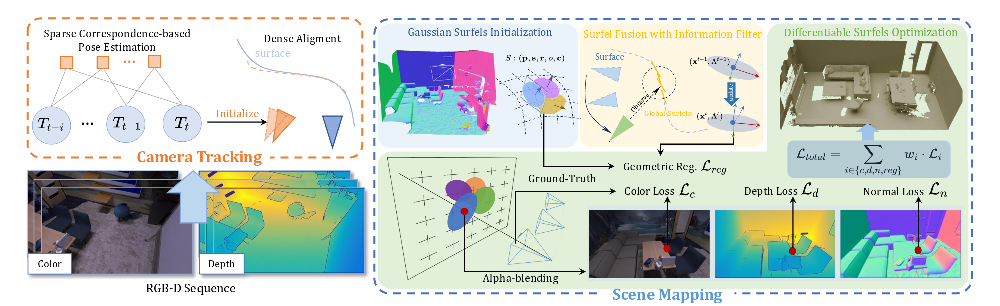

Method Overview

Realtime Capture and Reconstruction with EGG-Fusion

Framework of EGG-Fusion. Our framework is divided into two integral components. In the scene mapping module, Gaussian surfels are utilized as the fundamental primitives for scene representation and can achieve high-quality real-time reconstruction. The camera tracking module employs a sparse-to-dense strategy to ensure robust estimation of camera poses.